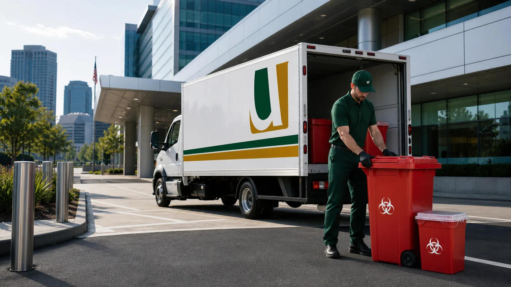
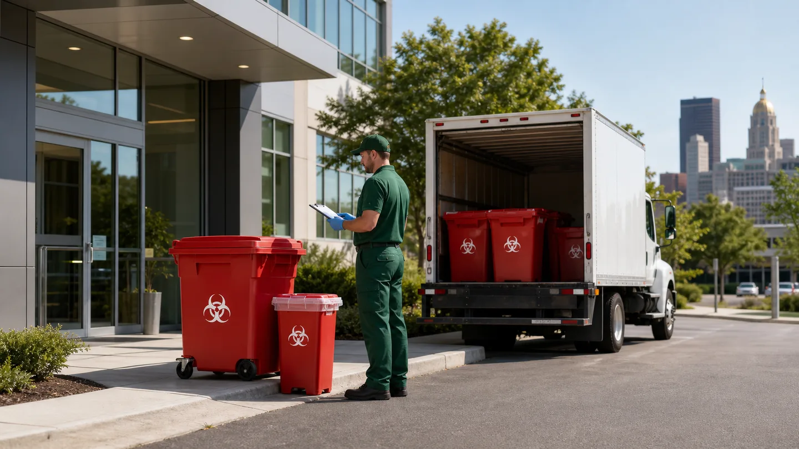

Healthcare facility waste
Pickup planning for red bag waste, sharps, containers, manifests, and service records.

Location
United Medical Waste supports Hartford healthcare networks, clinics, labs, and corporate medical facilities with regulated waste pickup planning, sharps support, pharmaceutical waste review, training support, and documentation..
Service Review
Share the basics and the team will help review pickup, containers, records, training, and waste stream needs.

Local Services
United Medical Waste supports Hartford-area facilities with pickup planning, container setup, sharps management, pharmaceutical waste review, training support, and service records.
Programs are built around your facility type, waste volume, storage space, pickup frequency, and documentation requirements.
Pickup planning for red bag waste, sharps, containers, manifests, and service records.
Container planning and pickup coordination for occupational health and corporate care settings.
OSHA, DOT, RCRA, HIPAA, and Bloodborne Pathogens topics for staff handling regulated waste.
Service Planning
Each location has different routing, storage, access, and documentation needs. Use these points as a starting point when reviewing service for your facility.
Programs are planned with Connecticut biomedical waste requirements in mind.
Service can be reviewed for clinics, labs, healthcare networks, and corporate medical offices.
Teams can review regulated medical waste, sharps, and pharmaceutical waste before setting service.
Pickup records and manifests can stay organized for facility files.
Regulatory Context
Connecticut regulates biomedical waste under the 22a-209 framework and related sections. Facilities should review classification, storage, transporter, treatment, and recordkeeping duties before changing a waste program.
Local Coverage
United Medical Waste supports Hartford-area healthcare facilities with pickup planning, containers, staff training support, and organized service records. Include your facility type, location, primary waste streams, and current pickup schedule when requesting service.
Get a QuoteLocal Reading
Compliance reading curated for your region.
Guide
Connecticut healthcare facilities must follow DEEP biomedical waste regulations for packaging, transport, treatment, and documentation. Get a free audit.
Guide
Learn the medical waste disposal rules for healthcare facilities in Connecticut, Rhode Island, New Hampshire, Maine, and Vermont. Stay compliant.
Guide
Learn how medical waste disposal in New England works, including state requirements across MA, CT, RI, ME, NH, and VT, plus OSHA rules.
Guide
New England waste disposal is a collective effort between each of the states by following these regulations in order to keep the area safe and clean.
Common Questions
Connecticut's biomedical waste is regulated by the Department of Energy and Environmental Protection (DEEP) under 22a RCSA 209-15. In Connecticut, biomedical waste is equated with infectious waste for regulatory purposes.
Connecticut requires infectious waste to be disposed of only by (A) incineration, (B) discharge to a sanitary sewer if in liquid/semi-solid form with proper secondary treatment, or (C) another DEEP-commissioner-approved equivalent method. Properly treated waste rendered unrecognizable may then be disposed of as municipal solid waste.
Yes. Connecticut has specific requirements for chemotherapy and pathological waste, including human tissue - these must be disposed of by incineration. This is stricter than the general infectious waste rule and applies to all generators including medical offices, oncology practices, and surgery centers.
Connecticut requires tracking forms for all biomedical waste being transported off-site. Solid waste facilities will not accept biomedical waste that is not accompanied by a compliant tracking form. A licensed hauler typically manages this documentation as part of their service.
Medical waste must be stored away from other waste materials and in areas accessible only to authorized personnel. Waste must be properly packaged and labeled before storage. Generators bear full responsibility from generation through final disposal under Connecticut's cradle-to-grave compliance approach.
Yes. Transporters must obtain approval from DEEP and provide security (insurance/surety bond) of not less than $100,000 covering bodily injury, property damage, and environmental restoration. Any biomedical waste delivered to an incinerator - inside or outside Connecticut - must go to a compliant facility.
Connecticut's broad definition of sharps includes dental carpules, scalpel blades, and syringes - not only needles and lancets. The term also covers any intravascular device including indwelling catheters and introducers. Dental practices must treat all of these as regulated sharps waste.
Connecticut's cradle-to-grave framework means generators remain responsible for waste even after it leaves their facility. Penalties can reach $10,000 per day for violations. Solid waste facilities refuse waste that is improperly packaged or unlabeled, creating an immediate compliance crisis.
Need medical waste pickup or training support in Hartford? Share your facility type, waste streams, and current service needs so the team can review next steps.
Get a QuoteContact Us